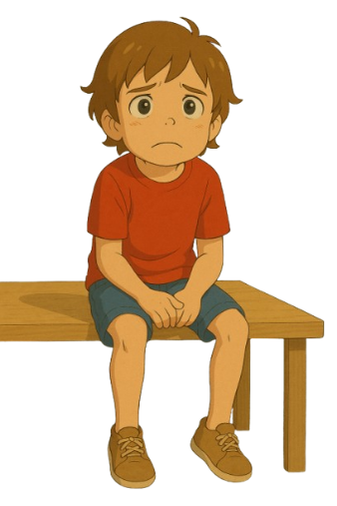

Challenges
Every hour, a student in India commits suicide.
Source: NCRB (National Crime Records Bureau)48.75% of Indian graduates are unemployable.
Source: Economic Survey3,700 PhD holders applied for a peon’s job in Uttar Pradesh.
Source: Economic TimesMeet Chottu
An 8th grader carrying a backpack heavier than his dreams, with anxiety in his mind and pressure in his heart.
His day? Memorizing what he’ll forget by lunch. Outdated textbooks. A flood of social media “tips” from toppers and teen gurus. He’s not alone—millions of students are stuck in this cycle.
Chottu can solve equations but freezes in interviews. He can calculate compound interest but splurges ₹500 on gaming. Budgeting? Saving? Investing? No one ever taught him that.
He recites the Pythagorean Theorem but can’t say what he wants to be—except maybe what Sharma ji’s son became.
